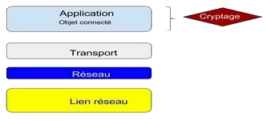
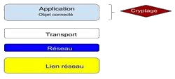

Application
Pour cette partie de la sécurité, nous allons faire un peu de réseau. Bref un schéma des couches réseau en modèle TCP/IP permet d’illustrer cela.


Les aspects sécurité sont portés dans ce modèle TCP/IP. Les capacités de sécurité au niveau de la couche application : l’autorisation, l’authentification, la confidentialité des données d’application et la protection de leur intégrité, la protection de la sphère privée, les audits de sécurité.
Dans une étude réalisée en 2014 réalisée par Fortify, la division d'HP dédiée au cyber sécurité. On a pu constater que sur 10 objets connectés audités:
- 70 % ne cryptent pas les données échangées avec le réseau
- Ce manque de cryptage laisse le champ libre aux pirates informatiques, d’où problème de sécurité.
- 80 % ne nécessitent pas de mot de passe suffisamment complexe;
- 60% n'offrent pas une interface Web suffisamment sécurisée.
Donc nous allons basés au niveau de la couche application afin de voir le chiffrement des données personnelles avant les transports sur le réseau.
Cryptographie
Le cryptage de l’information se fait par l’intermédiaire de la cryptographie symétrique ou asymétrique qui va permettre le chiffrement des données de l’utilisateur pour la circulation sur le réseau afin d’éviter le piratage de données, donc assurer la sécurité de l’information.
Or en réalité peu des objets connectés sont dotés de cette fonction de cryptage de données comme l’affirme l’étude sur le cyber sécurité précédente.
Mais tout de fois même si les données sont moins sécurisées au niveau de l’utilisateur, il est d’une grande importance pour l’hébergeur des données, le Data Center.
Data Center
La deuxième partie de la sécurité est lié au Data center.
Le data center (centre de traitement des données en français) est l’un des éléments nécessaires au traitement et stockage des données numériques. Indispensable à Internet, il a connu un fort développement avec l’essor du cloud computing. Concrètement, il s’agit d’un lieu physique contenant les serveurs informatiques qui stockent les données numériques.
Normes ISO/CEI 27001:2005 et 27001:2013 - Systèmes de gestion de la sécurité de l'information. La sécurité est d'une importance capitale pour les Datacenter et ses clients. La norme ISO 27001 constitue la certification la plus largement reconnue en matière de sécurité physique, de sécurité des informations et de continuité de services. L'ISO 27001 garantit que :
- les risques et les menaces pour l'entreprise sont évalués et gérés ;
- les procédures de sécurité physique, tel que l'accès restreint/nominatif, sont appliquées en permanence ;
- des audits sont effectués régulièrement sur chaque site, et comprennent des tests de sécurité ainsi que la programmation et le suivi de la vidéosurveillance.